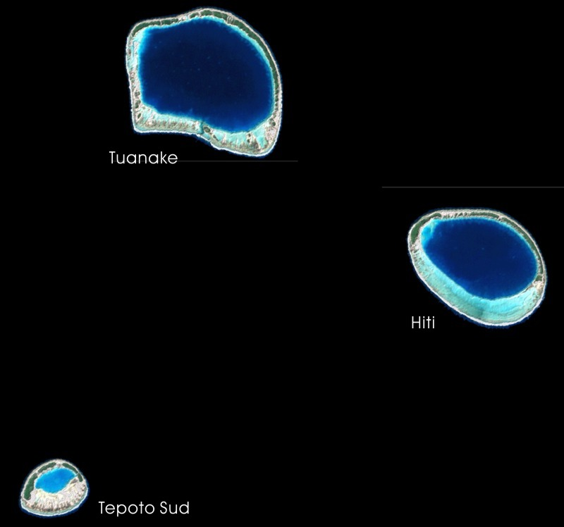
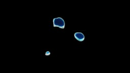
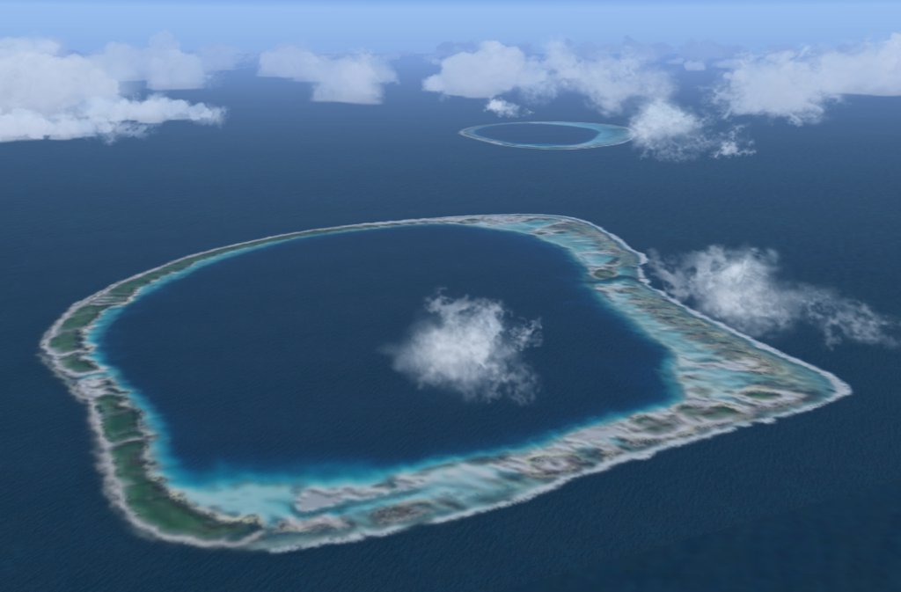
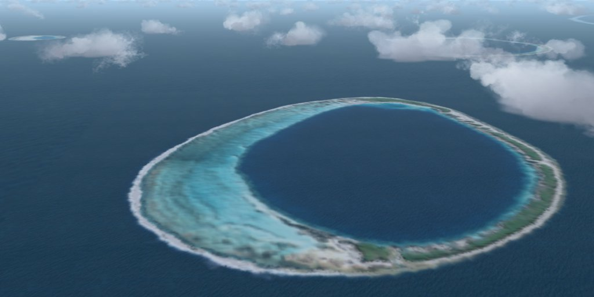
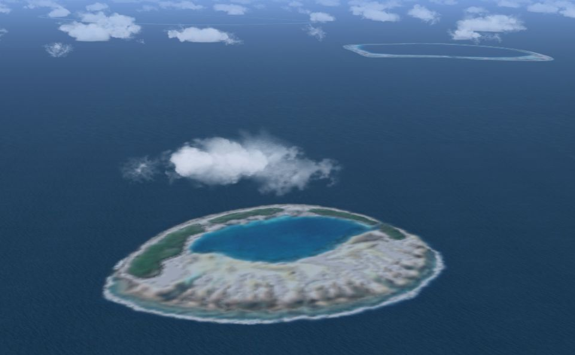

French Polynesia Tuamotu Archipelago FS9/FSX Addon Scenery
Group B
The Raevsk atolls
The Raevsk atolls


Size of the Raevsk atolls based on Rangiroa

A group of three small uninhabited atolls in the west-central Tuamotus is
called the Raevsk atolls.
Tuanake is located in the northernmost of the group.
The atoll is situated in the south-southeast 15km of katiu.
Tuanake is the largest of this group, in size (8 km by 6 km).
The atoll is formed with two large and four small islets.
In the south side of this atoll,
a single narrow pass connects the lagoon with the open sea.

Hiti, one of the Raevsk atolls, is located in the southeast 5km of Tuanake.
The atoll is a small egg shape.
The atoll consists of an outer reef that completely encloses its interior lagoon.
There is no reef crossing passage connecting the lagoon with the open ocean.
In the northern side of the atoll the reef is narrow and covered on vegetated motu.
In the south side of the atoll, the broad reef in the shape of a banana is formed.

Tepoto sud, one of the Raevsk atolls, is located in the southwest 10km of Hiti.
Tepoto Sud is one of the smallest atolls of the Tuamotu Archipelago,
approximately 4 km long by 3 km wide.
The atoll is formed with two main islands and
one small pass connects the central lagoon with the open sea.
It is a sweet island like a cake!!
